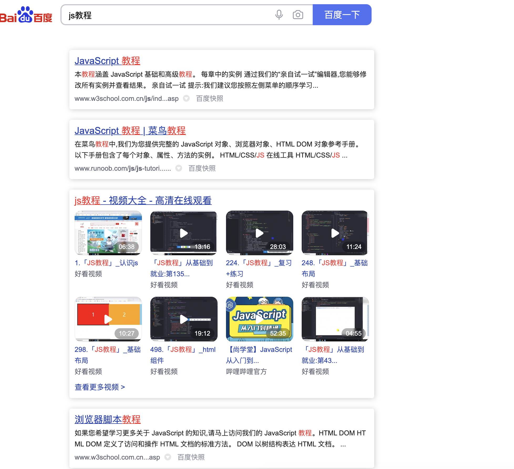

JavaScript 教程与参考手册
清晰、实用的学习资料，直接呈现真正有价值的搜索结果。
developer.example.comAd Terminator 在本地净化搜索页面，隐藏广告、推广和你不想看到的低质量内容，让每一次搜索更干净、更专注。
不改变搜索引擎，只在页面本地完成识别、隐藏与恢复。
识别广告、推广以及命中规则的低质量结果，动态加载和翻页后依然持续生效。
每个搜索引擎独立控制，状态会同步到同站点的其他标签页。
误拦截时一键显示当前页面的搜索结果，刷新后自动恢复净化。
Popup 与角标实时展示页面元素和搜索结果的处理数量。
const privacy = {
upload: false,
telemetry: false,
remoteCode: false,
process: "local"
};不上传搜索词、页面正文或浏览记录，规则和设置由扩展在本地处理。
减少页面噪音，让有用信息获得应有的位置。

Chrome 商店版本准备中，现在可通过开发者模式免费安装。
下载 ZIP 并解压到一个固定目录。
进入 chrome://extensions/，开启“开发者模式”。
点击“加载已解压的扩展程序”，选择刚才的项目目录。
Ad Terminator 没有遥测、广告 SDK 或远程代码。页面内容仅用于当前标签页中的规则匹配；站点开关保存在 Chrome 同步存储中。
不会。扩展只在你的浏览器中隐藏或恢复页面元素，不会修改搜索引擎服务器上的任何数据。
商店版本仍在准备中。目前可以从 GitHub 下载源码，通过 Chrome 开发者模式加载。
百度和 Bing 支持页面净化与动态结果过滤；360 搜索和搜狗搜索目前提供基础页面净化。
可以在 Popup 中临时显示本页结果，或前往 GitHub Issues 提交误拦截反馈。
免费、开源、本地运行。